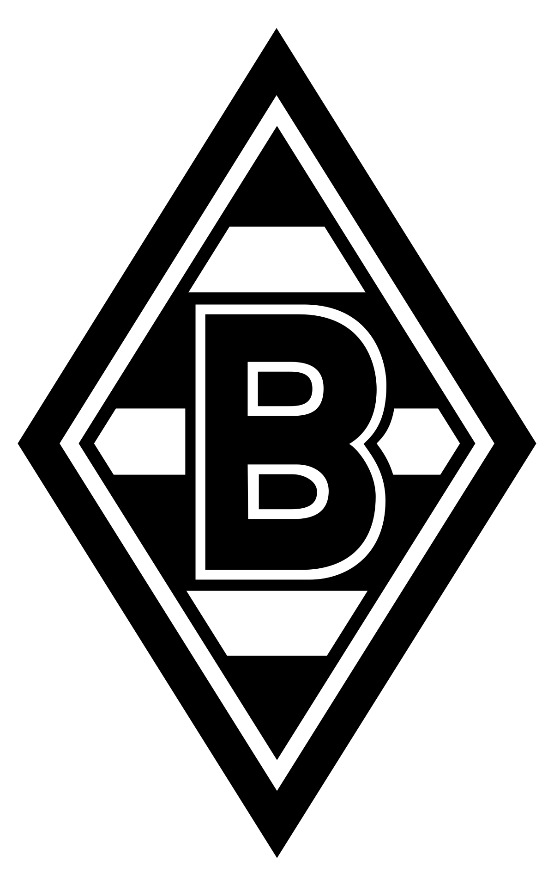

Equipos lideres de la Bundesliga
Actualmente en la liga los equipos lideres son:
- Bayern Múnich
- Leipzig
- Borussia Dortmund
- Wolfsburgo
Equipos que han sido campeones mas veces:
- F.C.Bayern (30)
- B.V. Borussia Dortmund (5)
- Borussia Mönchengladbach (5)
- S.V. Werder Bremen (4)
Historia del equipo:
- F.C.Bayern
El Bayern de Múnich (Fußball-Club Bayern München e.V.,Nota 1 en alemán y oficialmente, o Bayern München de manera abreviada) es una entidad deportiva profesional de la ciudad de Múnich, Alemania. Fue fundado el 27 de febrero de 1900 por once jugadores liderados por Franz John. Es uno de los clubes de mayor prestigio en el mundo, es conocido por su sección de fútbol profesional, que participa en la 1. Bundesliga. Disputa sus partidos como local desde 2005 en el Allianz Arena, denominado popularmente en alemán «Schlauchboot» —trad. «bote inflable», por su forma—, que cuenta con una capacidad de 75 024 espectadores, el duodécimo de mayor tamaño en Europa.
- B.V. Borussia Dortmund
El Borussia Dortmund (Ballspielverein Borussia 09 e.V. Dortmund,Nota 1 en alemán y oficialmente, o Borussia Dortmund de manera abreviada), o por sus siglas BVB, es una entidad deportiva profesional de la ciudad de Dortmund, en la región metropolitana Rin-Ruhr, del estado federal de Renania del Norte-Westfalia, Alemania. Fue fundado el 19 de diciembre de 1909. Es conocido por su sección de fútbol profesional, que participa en la Bundesliga, donde se ubica en la tercera posición en la tabla histórica con ocho títulos. Al 2020 cuenta con más de 154.000 socios, convirtiéndolo en el tercer club con mayor cantidad de socios en Alemania. Su lema es Echte Liebe, que traducido significa Amor Verdadero.
- Borussia Mönchengladbach
El Borussia Mönchengladbach (en alemán Borussia Verein für Leibesübungen 1900 e.V.), conocido habitualmente como Mönchengladbach o Gladbach, es un club de fútbol asentado en Mönchengladbach, en la metrópoli Rin-Ruhr, Alemania. Actualmente juega en la 1. Bundesliga. La época dorada del club tuvo lugar bajo la dirección de Udo Lattek en la década de 1970 cuando conquistó las cinco ligas que cuenta en su palmarés, en 1970, 1971, 1975, 1976 y 1977. Durante esa época, el Mönchengladbach cosechó sus mayores éxitos europeos al proclamarse campeón de la Europa League en 1975 y 1979. En 1977, llegó a la final de la Champions League y perdió ante el Liverpool. Entre algunos de los jugadores más importantes de su época dorada destacaron Jupp Heynckes, Berti Vogts, Günter Netzer, Allan Simonsen, Rainer Bonhof o Uli Stielike.
- S.V. Werder Bremen
El Werder Bremen23 (Sportverein Werder Bremen von 1899 e. V., en alemán y oficialmente, o Werder Bremen de manera abreviada) es una entidad deportiva profesional de la ciudad de Bremen, Alemania. Fue fundado el 4 de febrero de 1899, es uno de los clubes alemanes más laureados e históricos en el país, conocido por su sección de fútbol profesional. Cuenta con 40.376 socios. Disputa sus partidos como local en el Weserstadion, viste camiseta verde con pantaloneta blanca y medias verdes. Participará en la 2. Bundesliga desde la temporada 2021-22.
- F.C.Bayern
- El Bayern de Múnich (Fußball-Club Bayern München e.V.,Nota 1 en alemán y oficialmente, o Bayern München de manera abreviada) es una entidad deportiva profesional de la ciudad de Múnich, Alemania. Fue fundado el 27 de febrero de 1900 por once jugadores liderados por Franz John. Es uno de los clubes de mayor prestigio en el mundo, es conocido por su sección de fútbol profesional, que participa en la 1. Bundesliga. Disputa sus partidos como local desde 2005 en el Allianz Arena, denominado popularmente en alemán «Schlauchboot» —trad. «bote inflable», por su forma—, que cuenta con una capacidad de 75 024 espectadores, el duodécimo de mayor tamaño en Europa.
- B.V. Borussia Dortmund
- El Borussia Dortmund (Ballspielverein Borussia 09 e.V. Dortmund,Nota 1 en alemán y oficialmente, o Borussia Dortmund de manera abreviada), o por sus siglas BVB, es una entidad deportiva profesional de la ciudad de Dortmund, en la región metropolitana Rin-Ruhr, del estado federal de Renania del Norte-Westfalia, Alemania. Fue fundado el 19 de diciembre de 1909. Es conocido por su sección de fútbol profesional, que participa en la Bundesliga, donde se ubica en la tercera posición en la tabla histórica con ocho títulos. Al 2020 cuenta con más de 154.000 socios, convirtiéndolo en el tercer club con mayor cantidad de socios en Alemania. Su lema es Echte Liebe, que traducido significa Amor Verdadero.
- Borussia Mönchengladbach
- El Borussia Mönchengladbach (en alemán Borussia Verein für Leibesübungen 1900 e.V.), conocido habitualmente como Mönchengladbach o Gladbach, es un club de fútbol asentado en Mönchengladbach, en la metrópoli Rin-Ruhr, Alemania. Actualmente juega en la 1. Bundesliga.
- S.V. Werder Bremen
- El Werder Bremen (Sportverein Werder Bremen von 1899 e. V., en alemán y oficialmente, o Werder Bremen de manera abreviada) es una entidad deportiva profesional de la ciudad de Bremen, Alemania. Fue fundado el 4 de febrero de 1899, es uno de los clubes alemanes más laureados e históricos en el país, conocido por su sección de fútbol profesional. Cuenta con 40.376 socios. Disputa sus partidos como local en el Weserstadion, viste camiseta verde con pantaloneta blanca y medias verdes. Participará en la 2. Bundesliga desde la temporada 2021-22.
F.C.Bayern B.V. Borussia Dortmund Borussia Mönchengladbach S.V. Werder Bremen 

 Si necesitas mas informacion sobre la Bundesliga,haz click en el link de abajo: